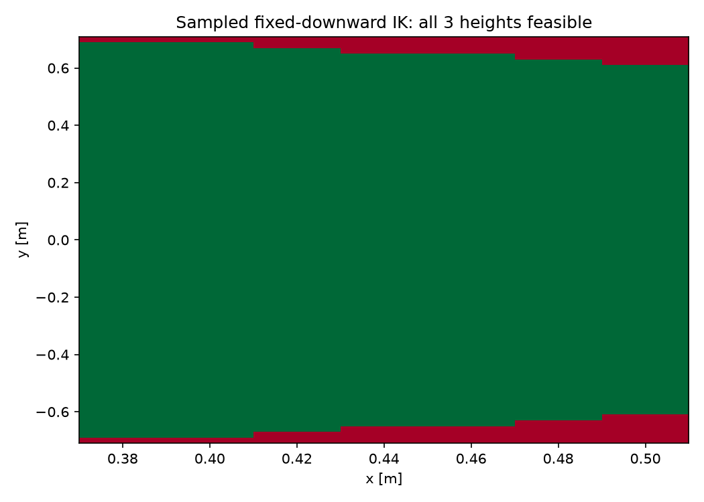
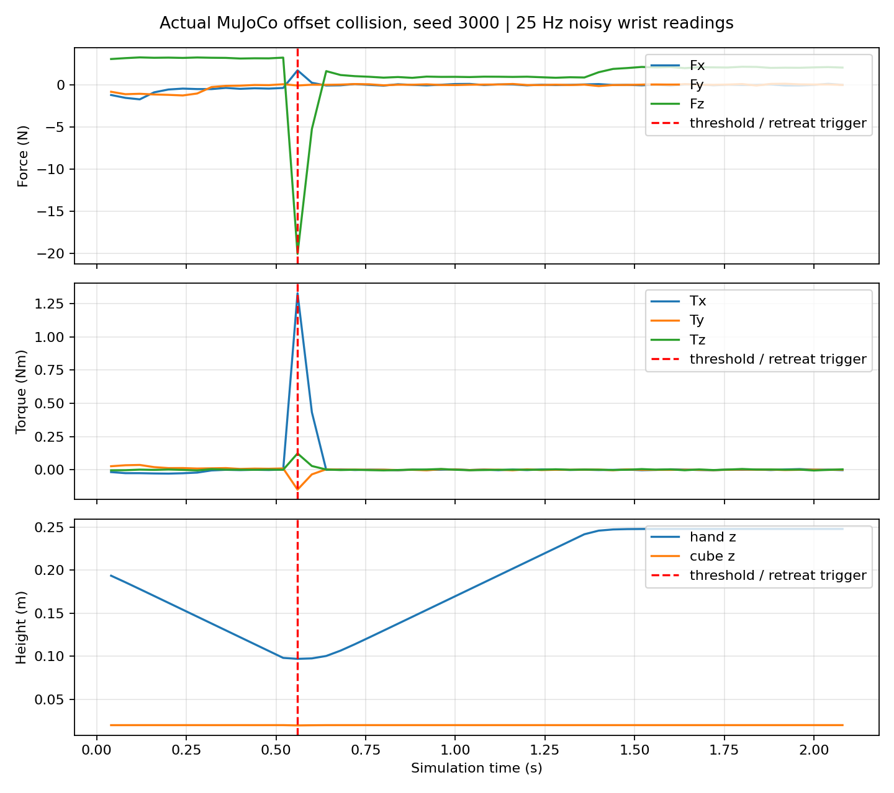

给观测加误差
独立零均值高斯噪声：物体相对位置 σ=3 mm，手位置 0.5 mm，手速度 5 mm/s，物体速度 10 mm/s，腕力 0.05 N、力矩 0.002 N·m。强噪声将策略观测误差乘 5，独立检测器仍保留原噪声级别。
这是合成读数误差，不是摩擦、质量随机化，也不是视觉遮挡、延迟或真实传感器模型。
MUJOCO · FORCE / TORQUE · PPO
从三轴夹爪到 Panda 七轴机械臂。
用同步六维力看清接触，用失败与数据检验学习。
40维观测包含按时间对齐的原始六维腕力及变化、当前位置/前次位置与已执行命令；真实带高、接触真值、无碰撞模式不进入actor。策略输出一维连续竖直速度，每16 ms决策，2 ms物理子步，经有限IK和关节动力学执行。它不是瞬移TCP，也没有水平跟踪、夹持或落盘动作。
64回合行为克隆（BC），14,441条示教/纠偏观测，再实际训练32,768 PPO步；PPO使用132个隔离种子，没有开发/保留交集。新合同是32帧稳定估计与4秒预算，不是旧版44维/96帧/3.2秒合同。三独立种子的最初小保留集里，同传感规则、BC、PPO各6接触与6负例均通过，这既没有证明PPO优于规则，也没有证明可靠。
2026.11.17 补充：逐项核对本轮冻结训练代码，代码与训练结束时记录的哈希一致。以下只对应上方 R1 的32,768步PPO，不沿用下方历史抓取公式，也不代表后续重建分支。BC阶段用教师动作的均方误差训练；随后标准PPO使用下式环境奖励，未继续加入BC锚定损失。
r = -0.01 + r_phase + 20·S + 5·N - 10·H - 5·E - 0.002·F_end
尚未记录首次真实触带：
r_phase = -1·I(v_cmd > 0.005) - 0.2·I(|v_cmd| < 0.003)
已记录首次真实触带：
r_phase = 0.2·P + 0.3·M - 0.3·I(v_cmd < -0.003)
- 100·max(0, Δz - 0.004)I为条件指示量，P/M/S/N/H/E为0或1。每16 ms控制步计算一次，没有再乘Δt；reward本身是无量纲评分。v_cmd为竖直速度命令（m/s，向上为正，执行范围−0.04至+0.025）；Δz为相对首次真实触带位置的净抬升（m）；F_end为最后一个2 ms物理子步的手/指对带面法向力之和（N），不是本周期峰值或冲量。线性力惩罚系数对应每N扣0.002分，超4 mm抬升项对应每m扣100分。
| 量 | 代码中的实际条件与含义 |
|---|---|
| 首次真实触带 | 任一物理子步手/指对带面法向力合量>0.4 N后锁存。它切换奖励分段，不是actor的阶段输入。 |
| P：物理保持 | 已有首次触带、反向命令及真实向上运动记录；净抬升1–5 mm；|v_cmd|<3 mm/s；本16 ms窗口最大带载荷<0.2 N、最大|真实竖直速度|<3 mm/s。每满足一步加0.2。 |
| M：测量保持 | 曾在下行命令<−5 mm/s时测得腕力范数>0.8 N，并已发出向上命令；|v_cmd|<3 mm/s；相对向上开始时的测量位置抬升0.5–6 mm；去皮带噪腕力<0.35 N、腕力矩<0.05 N·m；最近32帧位置拟合的|斜率|+1.96倍标准误<2 mm/s，8帧滑动平均的跨度<0.5 mm。每满足一步加0.3。 |
| S：接触成功 | P与M各自连续累计至少240 ms，且没有停止阈值或提前向上标记。成功加20并终止。提前向上标记指首次真实触带记录前发出>5 mm/s向上命令。 |
| N：无碰撞负例正确 | 仅无带碰撞模式：没有提前向上、没有任何机器人外部接触、未触发停止；下探量>0.8×min(0.12 m, 初始高度−0.065 m)，并到4秒上限或工作区下界。加5，不要求凭空找到接触。 |
| H：停止阈值 | 历史最大总带载荷>35 N，或周期末未加观测噪声的去皮腕力范数>30 N、力矩>2 N·m、任一关节速度绝对值>3 rad/s。扣10并终止；不是实机安全认证。 |
| E：过早上行终止 | 真实TCP高度超过本回合初始高度6 mm，扣5并终止。它与“触带前提前UP”锁存不是同一变量。 |
这套奖励没有额外动作平滑、能耗、物体抓取、水平跟踪或投放奖励。成功与负例项在结束时发放，其余项逐步累加；4秒截断、TCP低于65 mm也会结束回合，但它们本身没有独立失败罚分（仅可能同时触发上述项）。代码如此实现，不代表这些权重已最优，也不能据公式宣称PPO优于BC或规则。
冻结模型，不重训、不选模、不放宽门：100独立训练域内场景，65接触、35无带碰撞；带高±10 mm、全局初态z=0.19–0.22 m独立抽样，合成噪声1/3倍各50场。三方法使用同物理种子、噪声与配置。
| 方法 | 接触恢复/保持 | 无碰撞正确 | 提前UP标记 | 停止阈值触发 |
|---|---|---|---|---|
| 同传感规则 | 65/65 | 35/35 | 0 | 0 |
| BC | 64/65 | 35/35 | 0 | 0 |
| PPO | 62/65 | 31/35 | 5 | 0 |
域内最大总带法向峰：规则11.383 N、BC11.271 N、PPO11.329 N；最大冲量分别0.2833、3.4737、0.2791 N·s。各最大值可能来自不同场景。PPO首次真实向上最大34 ms，16 ms是控制周期，不是总制动时间。
预注册的前8个成功接触场景各再保持2.048秒，三方法均无再接触或停止；最大净漂规则约0.000129 mm、BC0.558 mm、PPO0.410 mm。这是成功子集诊断，不覆盖原失败。网络达到的是容差内保持，不能将微小非零速度称为绝对静止。
R1冻结PPO恢复 → 测量稳定交接 → 闭夹稳定 → 抬升 → 搬运 → 释放 → 盘内沉降。交接只读测量保持时长，不读含接触真值的成功标签。后续是脚本与可测门控，不是端到端RL；目标追踪依然理想化。无中间reset、焊接或运行中改写物体位置/速度。
闭夹要求双侧touch各>0.15 N、夹宽8–70 mm、16帧宽度span<0.5 mm、闭合速度<3 mm/s，连续240 ms才lift。touch本身不识别接触对象，真实双侧目标承载仅用于独立物理审计。
| 条件 | 实际结果 | 证据范围 |
|---|---|---|
| 静止40 mm | 2/2完整抓放 | 仅两个开发种子 |
| 静止12 mm | 0/2，抬起后搬运失载 | 不计投放成功 |
| 40 mm，交接后开带0.01 / 0.02 m/s | 各1条成功 | 同一个开发种子、不是成功率估计 |
40 mm成功有真实释放及盘内低速沉降400 ms。12 mm两例先有效抬升约111 mm，在lift→carry后66–92 ms丢失双侧载荷，未释放即失载；可能涉及搬运启动与有限接触区，尚未因果隔离，不能再归因于没有稳定闭夹就抬升。原日志没有保存目标角速度，无法独立逐帧复算该项沉降条件，保留此验证限制。
每段都标明来源及实验范围。恢复小集视频和扩大测试失败视频不是同一条件的性能对照；R2视频保留完整前置阶段，不拼接抓取。
R1没有证明优于同传感规则，不应替换规则基线；R2没有解决12 mm搬运失载，也没有失败重抓验证。仅使用刚体仿真、合成噪声、静止去皮与理想低层反馈，没有通信延迟或实机标定。35 N带峰、30 N腕力、2 N·m腕矩及3 rad/s阈值是仿真停止设置，16 ms末检查；2 ms记录不等于2 ms制动。后续先诊断失载与恢复失效，再增加速度，不用小样本成功包装为可靠系统。
本次仅发布公开实验说明与视频，不公开源码、模型权重、私人数据或运行凭据。下方历史内容保留原文；旧版本的计划、合同与成绩不是这次重建的结果。
三个尺寸/颜色类别的小方块从上游依次进入，抓取、投放、返回，继续处理下一个；空夹或滑落后检查最新位置，仍可拦截才重新抓。这次重点不是让视频每次都成功，而是检验连续调度、失载恢复和越界跳过是否闭环。
9 件物体：8 件预先放在上游、间距 0.60 m，由同一传送带依次带来；另 1 件初始已在下游边界外，作为无抓取跳过探针。质量均 70 g，初始摩擦系数 0.8，三类是固定尺寸与颜色标签，不是视觉分类模型或材质泛化实验。目标 ID、位置和速度来自仿真状态，代表理想视觉追踪；每个控制步 16 ms，内部 8×2 ms 物理步。
WAIT → 选择可拦截目标 → APPROACH → CLOSE → LIFT → CARRY → RELEASE → RETURN
针对当前 Panda 模型、固定朝下末端姿态，在 x=0.38–0.50 m、y=−0.70–0.70 m 的 2 cm 网格与 0.174 / 0.240 / 0.300 m 三个高度，共求解 1,491 个点的多初值 IK。通过条件：位置误差 <3 mm，姿态误差 <3°，关节限位内缩 0.05 rad，并排除模型生成的非预期接触。1,403 点通过。

在线要求相邻 XY 四角在三个高度全部通过，再留纵向 2 cm 裕量；仅批准 x=0.40–0.48 m。边界查询不直接检查 z，适用前提是所规定的 0.174–0.300 m 操作高度段。
| x / m | 批准 y 范围 / m |
|---|---|
| 0.40 | −0.640 至 +0.635 |
| 0.42 / 0.44 | −0.620 至 +0.615 |
| 0.46 | −0.600 至 +0.595 |
| 0.48 | −0.580 至 +0.575 |
500 个独立连续插值点重新求 IK 均通过，最大位置残差 1.464 mm、姿态误差 0.159°。选择目标时按距离/0.55 m/s + 0.45 s 估算拦截预算，接近时再预测未来 0.35 秒是否越界。
| 固定场景 | 进入释放 | 最终成功 | 跳过 | 有重试的目标 |
|---|---|---|---|---|
| 0.1 m/s，无脉冲，56秒 | 8 | 6 | 1 | 0 |
| 0.1 m/s，摩擦脉冲，56秒 | 8 | 6 | 1 | 1，第三次闭夹后成功 |
| 0.3 m/s，无脉冲，24秒 | 3 | 3 | 6 | 0 |
每场总计 9 件，包含 1 件初始越界探针。这是固定布局的单次连续运行，不是随机独立任务成功率。0.1 m/s 两段中另有 2 件虽然释放但最终未满足区域判据，没有计成功；0.3 m/s 目标 7 在 y≈0.517 m 时被“预计闭夹前越界”门控中止，未闭夹。
附加固定场景：0.2 m/s 为 3 件成功、6 件跳过；0.5 m/s 为 2 件成功、7 件跳过。高带速吞吐仍不足，不能称 0.5 m/s 稳定达标。以上场景未触发仿真终止，但不构成实机安全证明。
最终成功要求释放时物体位置与 TCP 相近且已抬高，并在运行结束时留在目标区。这是几何评测代理，不是严格接触身份认证；碰撞和滚动仍会让已释放物体出界。每物体事件与计数由完整运行记录统计，不用成功剪辑代替整段结果。
ID1 首次闭夹在 7.552 秒、y=−0.2251 m；抬起后 8.176 秒将摩擦人为降至 0.025，持续 0.32 秒再恢复 0.8。8.192→8.336 秒物体 z 从 0.2436 降到 0.1646 m，实际掉回皮带。8.368 秒感知失载进入 RETRY，随后又有一次空夹；10.224 秒第三次闭夹时 y=−0.01413 m，已移动约 21.1 cm；12.384 秒受控释放并最终留在区域内。
在线运行不改物体 qpos，不焊接抓取，不瞬移或重置失败对象。摩擦恢复不依赖该目标是否仍被选中。这条链路已独立回放复现，但仅证明该特定扰动下的工程闭环，不是模型学会新重抓技能。
当前先固定调度、边界与失载保护接口，再训练限定的追踪/闭夹技能并作同场景对照。真实视觉延迟、ID切换、遮挡、误检，连续夹持力与真实触觉标定都尚未覆盖。本版不上传代码、权重或训练数据；下方各代保留当时方法与局限，不能跨不同环境和判据排列成性能提升榜。
这是 v10 之前的单物体学习策略，与上面的多物体 FSM 基线不同。当前保留 139D 候选模型；142D 时序版未表现更好，没有因版本更复杂就替换。
理想目标位置每 16 ms 刷新 → 网络输出 4D（笛卡尔 xyz 速度 + 夹爪）→ 差分 IK → 七轴关节位置伺服，物理子步 2 ms。139D 观测是在 132D 压缩触觉/腕力/本体状态基础上增加目标速度与上一动作，目标偏差来自仿真真值模拟理想视觉追踪。没有向 actor 输入教师阶段、碰撞对象身份或成功标签。不是直接七轴动作，也不是已验证的实机硬实时链路。
142D 版增加夹爪命令保持时长、有/无触觉持续时长，但同时改变了示范预算与网络，属于迭代比较，不是严格单特征消融。两版都只做了单训练起点，自动 reset 随机源不能保证逐位复现。
| 速度 m/s | 无延迟严格成功 /20 | 其中方块 /5 | 仿真安全停止 /20 | 32 ms位置延迟成功 /20 |
|---|---|---|---|---|
| 0 | 5 | 3 | 3 | 5 |
| 0.1 | 6 | 3 | 10 | 6 |
| 0.2 | 6 | 3 | 8 | 5 |
| 0.3 | 6 | 3 | 11 | 4 |
| 0.4 | 5 | 2 | 11 | 0 |
| 0.5 | 3 | 2 | 12 | 2 |
每速度包含方块、圆柱、球体、极低摩擦各 5 次（seed 96000–96004）。严格成功要求受控释放前真实双指持物、落入目标区并保持、无误释放或安全停止，排除偶然滚入。0.5 m/s 无延迟仅 3/20，远未稳定达标。仿真停止仅覆盖指尖皮带力与关节速度阈值，不是完整实机安全控制。
无延迟 120 次共 31 成功、55 安全停止，87 次出现重试但没有最终恢复成功；32 ms 延迟 120 次共 22 成功、60 安全停止，93 次重试中 2 次成功。不能解读成延迟更好，这是有限样本轨迹差异。142D 无延迟六档为 6/6/6/5/4/2（各 /20），32 ms 为 7/6/6/2/0/0，未改善高速稳定性。
前三段成功抓取与第四段重试成功均为挑选样例；第五段保留失败。总体成绩以上表为准。
当前模拟用大刚性滑动板的接触摩擦带动物体，不是柔性循环输送带；二值夹爪不能连续增力。物理步、运动与延迟索引已验证，但没有真实视觉误检、遮挡和通信抖动。主要瓶颈仍是高速闭夹时机、重试恢复与延迟。
以下原文保留发布时状态；旧文中的“下一步”不是当前承诺。不同环境、控制器、观测与成功定义不可直接横向排名。
继续使用压缩触觉阵列与132维观测，不向策略输入物体位置、速度、接触身份或成功标签。新训练加入质量与滑动摩擦随机化，并增加示教与训练预算。以下仍是静止皮带上的仿真实验，不是实机或移动传送带验证。
210条示范、160轮行为克隆（BC）、20轮×14回合纠正示教（DAgger），再进行65,536步带BC锚定损失的PPO，PPO步数为v7主模型的8倍。这是模仿辅助PPO，不是纯RL。网络仍为两层128单元，末端运动经IK转成七关节目标，夹爪命令仍是二值开合，不能连续增加夹持力。
每指8×6×3原始触觉阵列仍压成7个连续特征：三通道合量、二维接触中心、分布离散度与集中度，再与夹宽、历史、腕部六维力和机器人状态组合。训练质量45–100g，滑动摩擦系数0.25–1.05；按实际形状、尺寸和质量重算惯性。它们是未标定的材质代理，不对应已验证的金属、橡胶等真实材料。
| 每场景10次，seed 95000–95009 | v7旧策略 | v8新策略 |
|---|---|---|
| 方块受控放入区域 | 4/10 | 6/10 |
| 圆柱受控放入区域 | 0/10 | 4/10 |
| 球体受控放入区域 | 0/10 | 0/10 |
| 空抓后返回 | 10/10 | 10/10 |
| 固定极低摩擦后返回 | 5/10 | 10/10 |
| 抬起阶段渐变测试后返回 | 10/10 | 10/10 |
| 搬运阶段渐变测试后返回 | 10/10 | 9/10 |
这是真正配对的对照，不是拿新成绩与旧页面直接比。两策略均在同一v8环境测试，初始关节/物体状态、质量与摩擦逐值匹配。v7没有重训。训练量、示范数据和动力学设置同时改变，因此不能把改善单独归因于“多训练”。每场景仅10次、单训练起点，不构成统计稳定性或安全保证。
“受控放入”要求执行release、物体在目标区，并排除已检测到提前分离后才release的回合；它是仿真评测代理，不是策略输入。方块与圆柱各有一次虽放入区域，却没完成整个动作序列的保持条件。两种渐变测试各有8/10次出现抬起后物理分离；返回计数包含未抬稳的回合，不能解读为滑落检测准确率。
均为同一冻结v8神经策略推理。除标注的圆柱成功例seed=95002，其余为seed=95000；成功片段不是平均表现。仪表板显示腕力、触觉和夹宽，腕力包含重力与惯性，不等于夹紧力。
实际接触对的滑动摩擦与设置匹配；运行中没有改写物体位置，观测真值不变性探针通过。MuJoCo 3.3.7 touch_grid的负z朝向、[z,x,y]通道及(3,6,8)排列已用4个独立单接触探针检查；4个任务种子中5,953个有效指尖接触均在视场内。这是有限覆盖，不是全工作域证明，也尚无证据将圆柱问题归因于朝向、通道或视场。
本次仅新增网页说明与六段视频，不发布新源码、权重或训练数据；历史实验保留。MuJoCo 3.3.7 touch_grid实现。
下方“下一轮”与“尚未完成”描述保留其发布时状态；本轮进展见上方v8，不追溯改写旧成绩。
这一版移除策略中的物体位置、速度、接触身份和成功标志。任务从已给定目标位置出发，学习下探、触带、闭合、提起，再向机械臂所在侧转移、松开；空抓或失载时返回。带面在本轮训练与测试中静止，还不是已验证的运动传送带抓取。
以下五段均为同一个冻结神经策略的实际推理，固定 seed=91000，保留成功与失败。没有发布新源码、权重或训练数据包；下方旧实验原文与历史资料保留。
MuJoCo 3.3.7 官方 mujoco.sensor.touch_grid，每指8×6个角度网格、每格3个接触力通道（法向与两切向），双指共288个原始值。每指提取7个连续量：3个通道合量、2个接触中心坐标、分布离散度、集中度。双指14维加夹宽，保留4帧，共60维；加机器人/固定目标信息24维与同步腕部六维力8帧48维，总obs为132维。没有把每个网格原样塞入obs，也不是用单一抓取布尔标志代替触觉。
接触中心是角度分箱的归一化坐标，不是毫米坐标。这不是 PX6AX-GEN3-DP-S2015-Elite 的真实52触点布局，也没有模拟其封装弹性、滞后、温漂和通信延迟。14维触觉摘要是候选设计，尚未证明每项都必要。
60个教师示范、120轮行为克隆（BC）、10轮纠正示教（DAgger），再进行8192步带示教约束的PPO。不是纯RL从零学会：教师有规则阶段，推理动作由神经网络生成；低层仍使用IK和关节位置控制，夹爪动作按符号变成开/闭。
奖励按训练端阶段鼓励接近固定目标、触带后闭合、抬升、有载转移到机械臂侧目标区并释放；无载则鼓励闭爪返回上方。附加动作幅度惩罚、每步成本、成功奖励及力阈值停止惩罚。训练阶段与触带真值用于奖励记账，不进入actor观测、不直接选择推理动作。阈值检测不是硬件安全控制。
| 同5个测试种子91000–91004 | v6标量触觉 | v7压缩阵列 |
|---|---|---|
| 盒子受控放置 | 5/5 | 5/5 |
| 圆柱受控放置 | 5/5 | 1/5 |
| 球体受控放置 | 0/5 | 0/5 |
| 空抓、提前移走、两种人工失载：各组返回且不释放 | 各5/5 | 各5/5 |
受控放置要求执行release且物体进入目标区域；旧流程还要求在释放位保持，v7盒子在该严格流程指标为0/5。v6是保存的配对基线，不是本轮重训。额外8192步PPO探索未稳定改善泛化，没有替换本页视频模型。小样本和单训练起点不能代表普遍成功率；新接口完成不等于性能升级。
下面的55维obs、旧奖励、动态带面与视频属于此前版本，不是本次132维触觉策略。
从简化平移夹爪走到公开 Panda 七轴模型：先跟踪传送带上的方块，再学习触带、闭合和提起。下面是神经策略实际推理，不是脚本教师演示；策略经过行为克隆（BC）、纠正示教（DAgger）和带示教约束的 PPO。低层逆运动学与位置控制仍是工程控制器。
| 同一新测试集：74000–74029 | 严格成功 | 最大触带峰值 |
|---|---|---|
| BC + DAgger 起点 | 30 / 30 | 11.86 N |
| 普通 PPO，20,480 步 | 2 / 30 | 25.91 N |
| 示教约束 PPO，20,480 步（视频所用） | 26 / 30 | 13.23 N |
| 同策略推理时清零力特征 | 0 / 30 | 17.59 N |
PPO 没有超过 BC/DAgger。示教约束减轻了普通 PPO 的退化。清零力特征造成分布外输入，不能替代重新训练无力策略的因果消融。只有单训练种子，有限测试不构成实机可靠性保证。
额外独立20种子：名义条件20/20；较小噪声标准差×2为18/20；带速0.10m/s为16/20；步长1ms为17/20；带面摩擦0.5→0.3为20/20。临抓前将物体向前移30mm则0/20，触带峰值最高30.61N，3次诊断停止。模型仍可能把碰物体误当成该闭爪的接触信号，没有学会可靠的撤回、重新定位与重抓。
不重新训练、不加脚本恢复，三段均用同一个约束 PPO，视频固定 seed=74000。配对测试用74000–74009共10种子，属于前述30种子的子集，不能把两组当作独立样本相加。
相对位置σ从1.5增至3mm，策略力峰特征噪声σ=0.05N、力矩σ=0.002N·m。速度噪声仍为0.005m/s，关节与高度仍理想化。不是五倍噪声，也不是实测传感器频谱。
TCP首次低于0.20m时，将物体沿世界X方向移25mm。策略之后碰到带面，但没有满足抓取成功判据。
TCP首次低于0.18m时，将物体沿世界Y方向移80mm。演示中25Hz测得约2.56s先碰物体，2.96s闭爪，6.80s才碰带面，顺序错误。没有正确识别障碍并收手。
| 同10种子 | 成功 | 最大触带峰值 | 发生停止标志的回合 |
|---|---|---|---|
| 名义条件 | 9/10 | 8.83 N | 0 |
| 小幅噪声 | 9/10 | 8.27 N | 0 |
| 横向25mm漏抓 | 0/10 | 19.58 N | 0 |
| 前移80mm戳物 | 0/10 | 26.02 N | 2 |
| 索引（从0开始） | 维数 | 实际输入 |
|---|---|---|
| 0:3 | 3 | 物体−TCP的世界相对位置，m，σ=1.5mm |
| 3:17 | 14 | 7关节角rad、7关节速度rad/s |
| 17:20 | 3 | 物体平移速度m/s，σ=0.005m/s |
| 20:23 | 3 | 两指滑动位置m，以及步数/200 |
| 23:29 | 6 | 本40ms窗口去皮后逐分量带符号峰特征 |
| 29:53 | 24 | 4窗口力历史，包含当前窗口；最新一行通常重复当前6维 |
| 53:55 | 2 | TCP和物体高度：(z−0.15)/0.20，无额外噪声 |
每个力分量独立选窗口内绝对值最大的样本并保留符号，随后添加σ=0.025N/0.001N·m噪声，再以10N/1N·m缩放。各分量可能来自不同时刻，所以是峰特征，不是同步六维力。4行历史包含当前行，不是另外4帧；模型没有RNN。去皮只是零速重置后的单采样扣除，不是稳态标定或姿态重力补偿。
obs不含GT触带标志、接触身份或成功标签；但关节、位置、速度和高度仍使用理想化仿真状态。两个高度无噪声，也未完整模拟视觉遮挡、延迟和标定误差。“六维力输入”不意味着只靠力就能判断抓取。
策略输出4维：世界XYZ末端速度参考（系数0.20m/s，Z限为−0.05至0.10m/s），加一个开合值（>0闭、否则开）。25Hz更新参考点；阻尼最小二乘IK使用7关节、固定末端朝向。关节位置控制增益前4轴K=600/D=60、后3轴K=200/D=20，保留上游力矩限幅±87/±12N·m。它不是端到端关节力矩策略，也没有学会自由腕部姿态。
每40ms控制周期：
r = 20 × Δz
+ 0.03 × min(min(fL, fR), 2)
− 0.02 + 0.1 × T
+ 100 × (J 且 O) − 5 × SΔz是物体高度增量（m）；fL/fR是周期末左右手指对物体的法向力（N）。T是曾满足触带判据的锁存状态；J是联合提起成功；O是先触带再闭合的顺序；S是本周期任一子步触带法向力>25N或原始腕力范数>50N。奖励使用仿真接触真值，这是训练特权信息，不是从腕力估计出来的标签。
触带奖励+0.1一旦锁存就每步都有，不要求持续接触。双指项每步最多0.06；上升项奖励的是增量，不是高度本身。抓取模式没有额外的跟踪误差奖励、能耗/动作平滑惩罚或阈值以下连续力惩罚。
某一个40ms窗口内，手指/带面法向力>0.5N的子步累计至少20ms（不要求连续），触带标志才成立；首次闭合命令不早于触带确认时刻。随后双指较小法向力>0.2N且物体中心高于0.25m，连续15次25Hz周期末采样成立，才记成功。名义0.6秒保持不证明每个2ms子步都满足条件。
阈值在40ms周期走完之后才判断，无法阻止期间冲击，不是实时安全控制。旧训练代码还存在最多一个2ms子步的派生传感器/积分状态时序差；本次视频通过副本同步重算修正显示，没有追溯改变已训练的策略输入。真实机器人部署禁止。
本次仅发布演示视频及方法说明，不发布新源码、模型权重或数据包。下方旧实验的已发布资料保持不变。
Panda模型来源为Google DeepMind MuJoCo Menagerie 固定版本，不是用户设备数字孪生。带面是有限滑动平台，非完整无限循环输送带；质量、摩擦、驱动与传感器未实机校准。模型形状更真实，不代表动力学已验证接近某台真实机器人。
以下视频、600次评估和规则收手来自早期简化夹爪，不是上方Panda的成绩；原始方法与局限保留，不用新结果改写旧实验。
每组 100 次，seed=3000–3099，合计 600 次。噪声测试使用同一个冻结 PPO；漏抓与抓偏使用专门脚本，并非 PPO 的鲁棒性结论。
| 条件 | 抓取成功 | 触发腕部阈值 | 怎么理解 |
|---|---|---|---|
| PPO / 无观测噪声 | 100 / 100 | 38 / 100 | 正常抓取也会报警 |
| PPO / 轻噪声 | 100 / 100 | 17 / 100 | 报警只记录，不干预策略 |
| PPO / 五倍噪声 | 0 / 100 | 47 / 100 | 没有学会强噪声鲁棒性 |
| 旧目标 + 物体前移 | 0 / 100 | 0 / 100 | 100 次均漏抓、未接触 |
| 抓偏 55 mm + 规则收手 | 0 / 100 | 100 / 100 | 100 次触发收手，不是抓取成功 |
| 同样抓偏 / 不收手 | 0 / 100 | 100 / 100 | 持续碰撞对照 |
成功判据与报警独立：两指法向力各 >0.1 N，物体中心高度 >100 mm，连续保持 0.6 秒。接触力来自仿真真值，不是从腕力推断。“没报警”不能证明抓到了。
独立零均值高斯噪声：物体相对位置 σ=3 mm，手位置 0.5 mm，手速度 5 mm/s，物体速度 10 mm/s，腕力 0.05 N、力矩 0.002 N·m。强噪声将策略观测误差乘 5，独立检测器仍保留原噪声级别。
这是合成读数误差，不是摩擦、质量随机化，也不是视觉遮挡、延迟或真实传感器模型。
脚本在手下降到 95 mm 以下时冻结目标，对物体施加向前 2 N、持续 0.12 秒的外力，然后在旧位置闭合、抬升。实际施力，不瞬移、不吸附。
100 次全部漏抓且没有力报警。这说明过时目标会失败，不代表闭环 PPO 在同样扰动下一定失败。
脚本横向偏移 55 mm，下探时手指直接碰到物体。腕力残差范数 >1.5 N，或力矩残差范数 >0.035 N·m，锁存报警；下一控制步打开夹爪、抬升至 250 mm。
物理 500 Hz，控制及检测 25 Hz。它不能阻止第一次撞击，也不是安全等级急停。
下探的惯性同样会改变腕力。这里用同状态、同控制、禁用接触的第二个 MuJoCo 模型预测无接触基线，再减去它。这个理想化副模型知道精确质量和动力学，不能直接迁移成真实硬件估计器。

100 次抓偏对照中，规则收手把平均采样峰值指尖法向合量从 71.44 N 降至 21.97 N，25 Hz 近似法向接触暴露积分从 107.18 N·s 降至 1.164 N·s。后者不是有符号净冲量，也不是损伤指标；低频采样可能漏掉更高的瞬态峰值。
包含原创环境与实验代码、冻结策略、600 次结果 JSON、视频对应逐帧数据、图表、依赖版本与中英文说明。只含合成实验资料；去除了运行环境日志。依赖软件需另行安装并遵守各自许可。
python3.12 -m venv .venv
source .venv/bin/activate
pip install -r requirements-lock.txt
# 系统需安装 ffmpeg；无显示环境需可用 EGL
MUJOCO_GL=egl python experiments.py本次环境：MuJoCo 4.0.1、Gymnasium 1.4.0、Stable-Baselines3 2.9.2、PyTorch 2.15.0 CPU。图表脚本额外使用 matplotlib。复现需要受支持的 Python 3.12 和图形驱动；不同平台或依赖版本可能影响数值。